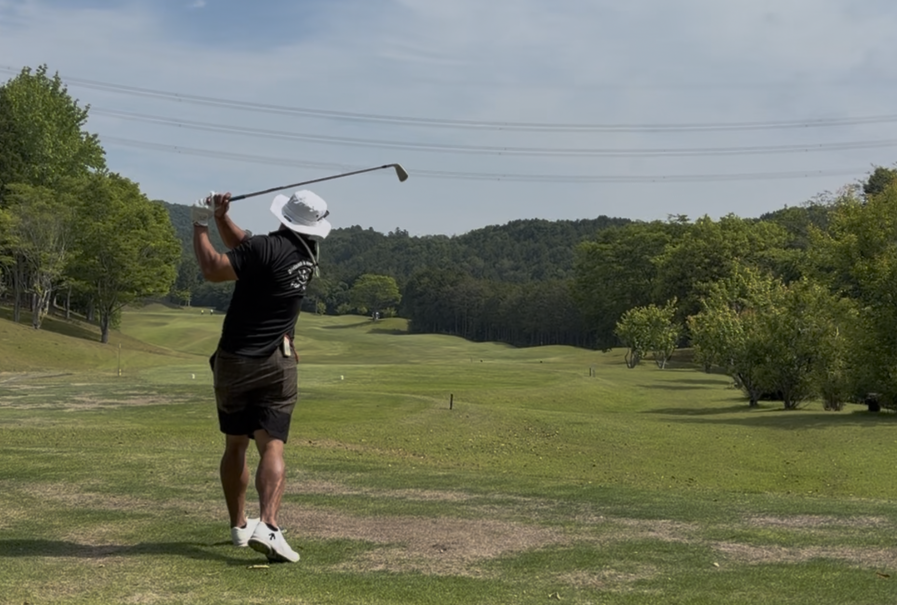
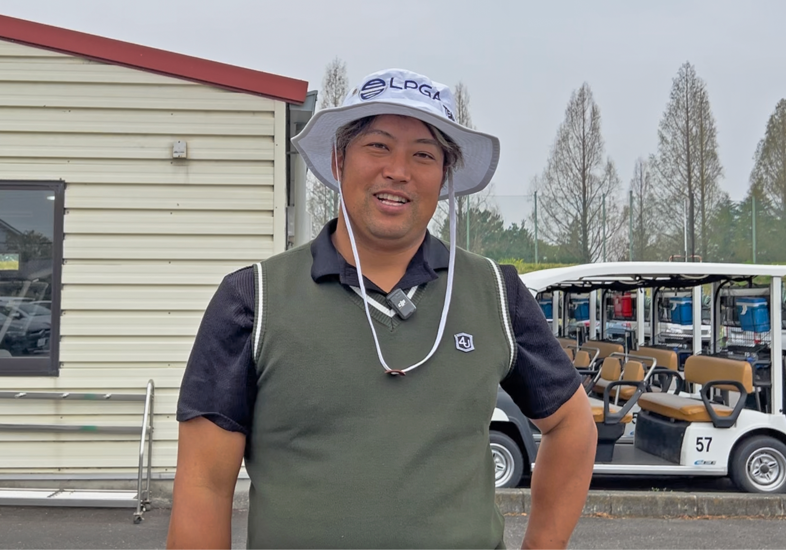
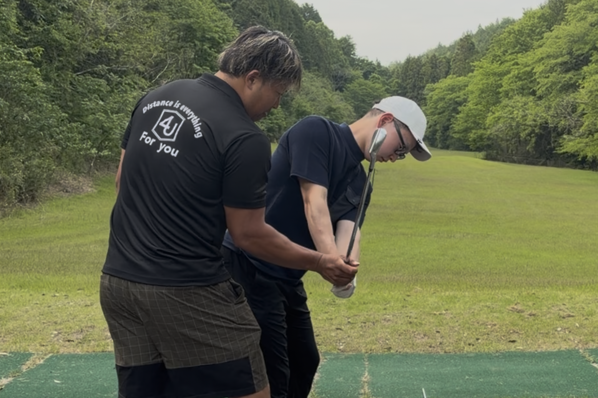
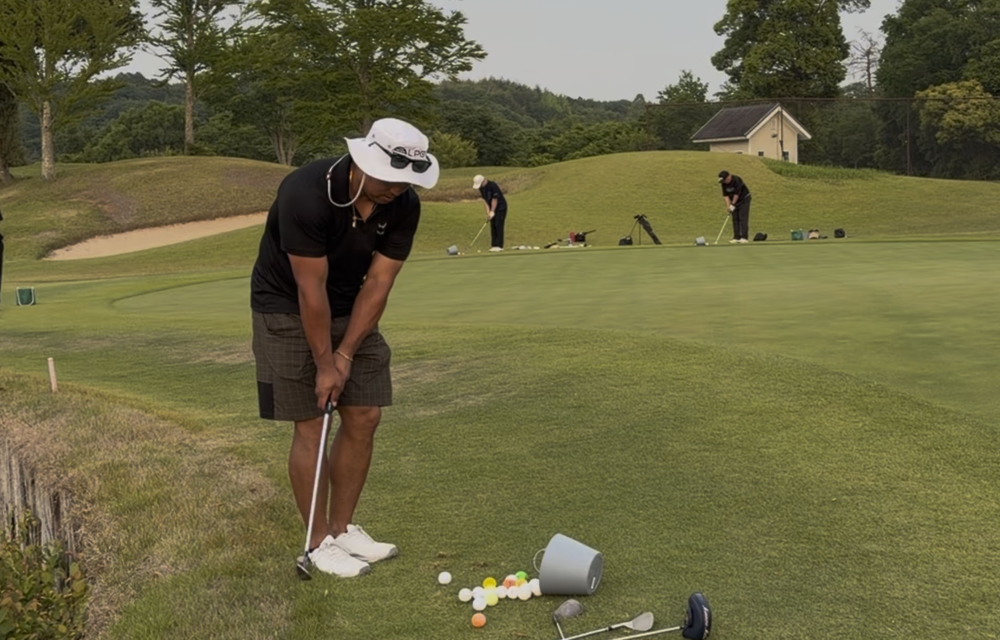

01 / エンターのプレーを間近で
動画では見えない一打の空気まで体感する。
構え方、ルーティン、狙い方、 ミスした後の反応まで。 エンター豊田のリアルなプレーを、 同じ組で体感できます。
ENTER TOYODA GOLF CAMP
ラウンド、練習、トレーニング、振り返りまで、エンター豊田と濃いゴルフの時間を過ごす。
FOR YOU
エンター豊田と一緒にラウンドしてみたい。
自分のプレーをコース上で見てもらいたい。
ラウンド中の考え方や狙い方を近くで見たい。
練習場だけでは分からないミスの原因を知りたい。
少人数で質問しやすいゴルフ時間を過ごしたい。
動画では見えないリアルな空気感を体感したい。

エンター豊田MONSTER
YouTubeで見ていたプレーを、 今度はすぐ横で見る。 狙い方、ミスした後の反応、 何を考えてその一打を選んだのか。 動画では見えなかった“リアル”を体感できます。
REAL CAMP FLOW
ただラウンドするだけじゃない。 プレーを見て、見てもらって、聞いて、修正する。 朝から晩までゴルフのことだけを考える2日間です。

構え方、ルーティン、狙い方、 ミスした後の反応まで。 エンター豊田のリアルなプレーを、 同じ組で体感できます。

練習場では気づけなかったクセや、 コースで崩れる原因を確認。 今の自分のゴルフを、 実際のプレーと練習の中で見直します。

飛距離、安定感、再現性。 ゴルフの土台になる体の動きを確認しながら、 普段のクセや使い方を整理していきます。

芝、傾斜、空気感。 練習場では分からない感覚を、 クローズ後の本番コースで確認。

なぜミスになったのか。 次はどう考えるのか。 ラウンド中だからこそ分かる判断を、 その場で一緒に整理します。

1泊2日4食付き。 ラウンド後も自然とゴルフの話になる。 それも、この合宿の空気感です。

少人数だから、 気になったことをそのまま聞ける。 動画では見えない話まで、 自然と飛び交います。

一緒に回って、悩んで、笑って、振り返る。少人数の合宿だからこそ、終わったあともつながるゴルフ仲間ができます。
VOICE
「練習場じゃ分からなかった“コースで崩れる原因”をその場で見てもらえたのがかなり大きかったです。」
30代男性「YouTubeで見ていた時より、 何倍も細かく考えてゴルフしてるのが分かりました。」
20代男性「ミスした後に次をどう考えるかを聞けたのが一番勉強になりました。」
50代男性SCHEDULE
PRICE
参加費（税込）
64,000円〜 週末料金などにより変動します。2ラウンド、宿泊、4食、 各種練習、反省会まで含まれています。VENUE
ウィンザーパークゴルフ&カントリークラブ
ラウンド、レンジ練習、コースアプローチ練習、コースパター練習まで、2日間しっかりゴルフに集中できる環境です。
公式サイトを見るLIMITED
大人数ではなく、 一人一人のプレーを近い距離で見られる人数に絞って開催しています。
FAQ
組編成はランダムですが、全行程に帯同するため交流の時間は十分にございます。
球数制限はありませんが、時間で終了となります。
どちらも歓迎です。
基本1人部屋です。希望者はツインも可能です（先着順）。
ありません。各自現地集合となります。
7時集合・翌16時解散予定。初心者も大歓迎です。レンタルは有料でございます。
雨天決行。荒天時のみ中止・変更の可能性があります。
※体調不良・天候・交通事情など、いかなる理由でも上記規定が適用されます。
銀行振り込み、または現地で現金払いからお選びいただけます。